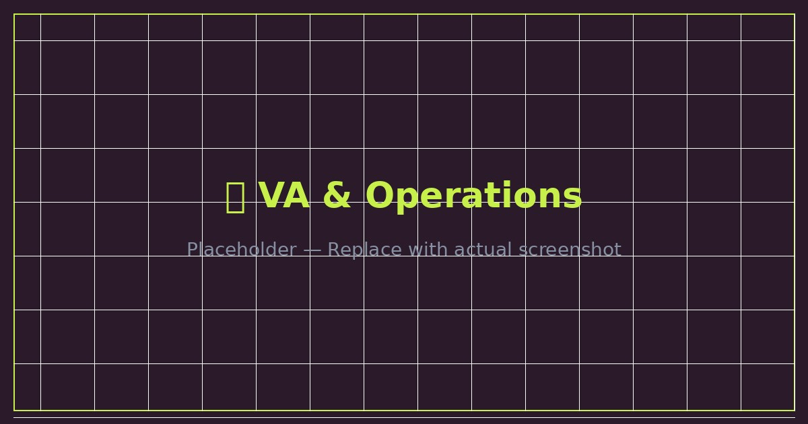
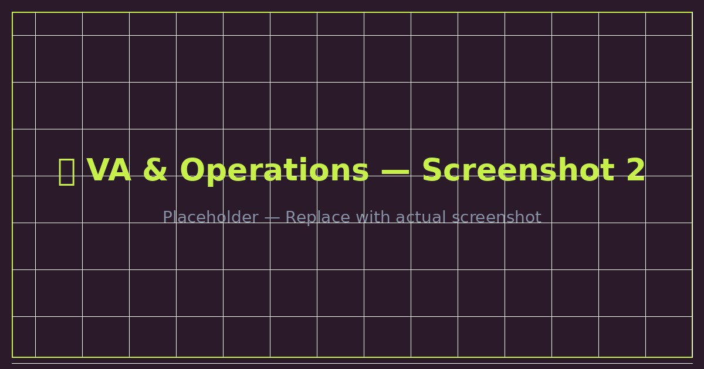
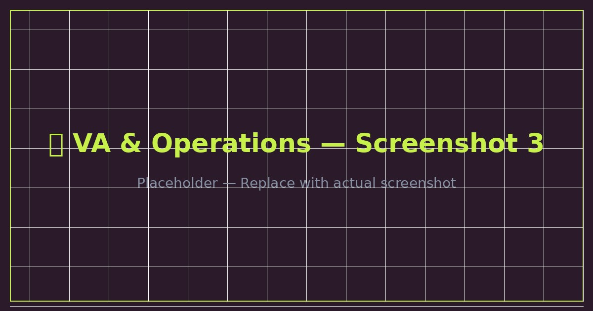
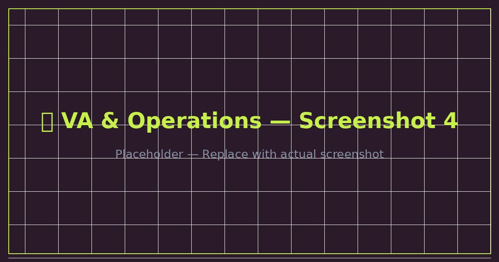

Comprehensive backend technical VA support for online businesses — covering website management, CRM operations, eCommerce backend, DNS and hosting management, data research, and multi-timezone availability.

The client needed a reliable technical virtual assistant who could take ownership of their backend operations without needing constant supervision. This included everything from keeping the website running, managing the CRM, supporting the eCommerce store, and handling technical troubleshooting as issues arose.
Operating across time zones with a fully redundant setup (backup laptop, internet, and power), I ensured the client always had support available when they needed it.


